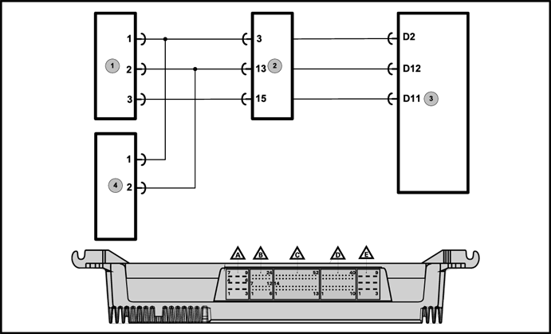
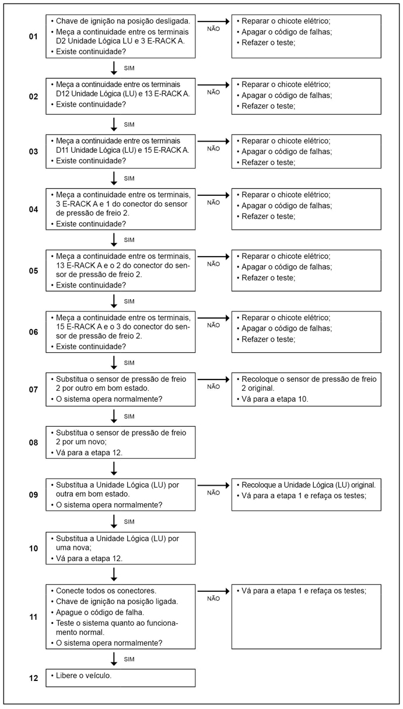

|
 
Legenda
- Sensor 2 de pressão do freio
- E-Rack A
- Unidade Lógica (LU)
- Sensor 1 de pressão do freio
Descrição da Falha
Sistema do sensor de pressão do freio 2, nível abaixo.
Indicação de Falha
Luz de alerta acende constantemente com os símbolos e ativa o alarme sonoro agudo pulsante, com o veículo andando ou parado.
A luz de advertência de pressão do freio permanece ligada enquanto a falha estiver ativa e o display indicará PRES 2.
Estratégia de Monitoramento
A Unidade Lógica (LU)
monitora o circuito de sensor de pressão do freio 1, quanto à curto
circuito para o massa e/ou interrupção, além de monitorar também os
níveis de pressão do sistema de freio, e o tempo de carga de pressão
com o veículo em funcionamento.
Efeito da Falha
Não há efeito para este código.
Possíveis Falhas
FMI 5: Curto circuito para o massa.
FMI 6: Circuito interrompido.
– Verificar as conexões quanto a mau contato ou pinos tortos.
– Verificar os cabos quanto à rompimento ou oxidação.
Avisos
  Atenção! Atenção!
Leia sempre as Recomendações para Diagnósticos.
Registro de Falhas em Outros Módulos de Comando
----
Passos do Diagnóstico de Falhas

|